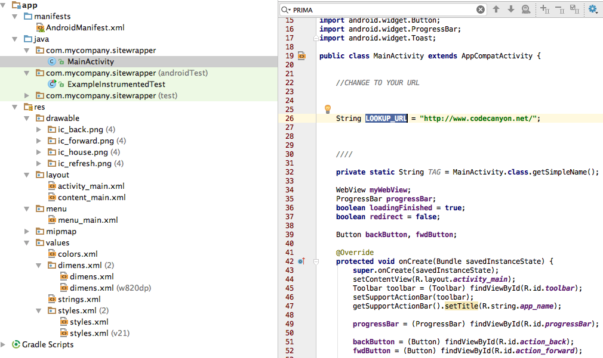

Welcome!
Thanks for purchasing!
Change the name of your app.
1. Open strings.xml and find the key app_name and change it to whatever you like.

Changing the Color of your app
Need help figuring out what color hex you want?
Visit https://color.adobe.com/ it's a great resource that will help you pick and it shows you the hex value
1. Open colors.xml and either add your HEX values for the colors, or add your own keys
2. Open styles.xml to choose your colors for the title bar, status bar, and progress bar.

Change the URL to your site
1. Open MainAcivity and change LOOKUP_URL to your URL.
Change the App Icon